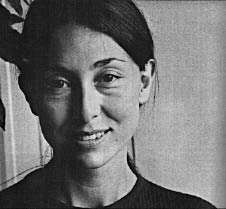

JULIA KRISTEVA
1941 yılında Sliven'de (Bulgaristan) doğan Julia Kristeva, edebiyat doktoru, filozof, psikanalist ve yazardır. Julia Kristeva 1966 yılında Fransa'ya yerleşmiştir. Burada Tel Quel dergisine katılır ve Michel Foucault, Roland Barthes, Jacques Derrida, Jean-Pierre Faye ve eşi olacağı Philippe Sollers'ten oluşan bir grup yazarın arasına girer. 1979 yılında, Jacques Lacan'ın seminerlerini izledikten sonra psikanalist olur. Ardından dil teorisyeni olarak göstergebilim ile psikolojik analiz arasında bir diyalog kurar. State University of New York'ta ve Paris 7-Denis Diderot Üniversitesi'nde göstergebilim dersleri verir. Fransa Akademik Enstitüsü üyesidir. Ayrıca Roland Barthes Merkezi'ni yönetmektedir. Buranın faaliyetleri, edebi metinleri disiplinlerarası bir perspektifte sorgulayan araştırmacı eğitmenlere ve doktora öğrencilerine yöneliktir. Julia Kristeva 2004 yılında, dil, kültür ve edebiyatın kesiştiği yerdeki sorunsallara yönelik "yenilikçi çalışmaları" nedeniyle Holberg Ödülü'nü (Norveç) alır. Ayrıca Harvard Üniversitesi'nde onursal doktordur. Düşüncesi yeni-yapısalcılığın izinde görülebilir. Araştırmalarının feminist teori üzerinde önemli bir etkisi ve beşeri bilimler ile toplumsal bilimler içindeki çok sayıda disiplinde uluslararası yankısı olmuştur. Julia Kristeva yirmi kadar eser yayımladı. Bunların en bilinenleri La révolution du langage poétique'tir (Seuil, 1974). Ayrıca Fayard yayınlarından Etranger à nous-même (1991), Les nouvelles maladies de l'âme (1993), La révolte intime, c. I ve II (2000), Le génie féminin, c. I: Hannah Arendt, c. II: Melanie Klein, c. III: Colette (2003-2004), La haine et le pardon, Pouvoirs et limites de la psychanalyse III (2005) ve üç de roman sayılabilir: Les Samouraïs (1990), Le vieil homme et les loups (1991), Possesions (2000).

KRISTEVA
İsyana çok önem veriyorsunuz, genel eğilim olarak bir isyanı arzuluyorsunuz... Bu dileğin ardında ne gizli?
Muhtemelen kişisel bir endişe ve yeniden başlama kaygısı gizli. Ben özgürlüğün bir yeniden başlama olduğu kanısındayım, genellikle dendiği gibi bir ihlal değil, çünkü ihlal fikri özgürlüğü önemli ölçüde sınırlandıran belirli kurallara özgürlüğün tabi olduğuna inandırır. Özgürlük eğer bir başlangıç olarak düşünülürse, isyan sözcüğü, muhalif hareketlerin bize miras bıraktıkları şematik ölçütlerden farklı olarak tahayyül edilebilir. Ne yazık ki çoğumuz için isyan teması devrim fikrine bağlıdır: Fransız Devrimi, Şubat ve Ekim Rus devrimleri, esasen politik bir moment ya da hareket olarak görülen 68 Mayıs isyanı; oysa ben bu isyan kavramının isyan fikrinin daraltılması olduğu kanısındayım. Sanskritçedeki "vel" köküne gönderme yapan terimin etimolojisi ele alındığında, açılma, keşfedilme, geriye dönüş ve yeniden başlama anlamları vardır. Aynı zamanda gezegenlerin hareketidir de, Rönesans'ta tüm göksel mekanikle birlikte keşfedilmiştir. Nihayet, reenkarnasyonu hedefleyen bir geçmiş arayışı fikri de vardır: Bu, Proustçu isyandır, ama aynı zamanda –ve bu noktada sizi şaşırtacağımı sanıyorum- Freudcu fikirdir! Hastalık öyküsü Freud'a göre bir isyandır, çünkü yazgıyı değiştirmek için geçmişi yeniden bulmak söz konusudur. Genellikle psikanaliz bir uyarlanma olarak düşünülür ve çoğu kişi için, özellikle Amerika Birleşik Devletleri'nde, normalleşmenin bir biçimidir. Oysa isyan kavramı, Freud'un anladığı anlamda -zaten bu sözcüğü sık kullanır- yeniden doğmak için geriye dönme ihtimalinde ısrar etmektir. İsyan sözcüğünde yeniden doğuş fikri elbette vardır.
Ben bunu çeşitli biçimlerde arıyorum, özellikle kişisel düzlemde, çünkü bana öyle geliyor ki günümüzde politik devrimler sınırlı: Teknik sınırlıyor, yeni dünya düzeni sınırlıyor, haklara saygı sağlama zorunluluğu sınırlıyor, ki bu bir isyan düzeninden ziyade adalet düzenidir. Yine de bireysel özgürlükler düzleminde, tinsellik düzleminde isyan kavramı, psişik uzamın canlılığı korunmak istendiğinde, temel olarak kalmaktadır. Oysa psişik uzam bize kalan tek "kutsal"dır ve tekniğe, insan haklarına, adalete dayanabilmesi için, bu kavramların ardındaki gizli iyilik ve yarara rağmen psişik uzamın sürekli yeniden-doğum kapasitesi olarak ayakta kalabilmesi için, yeniden başlangıç olarak isyan kavramının onarılması, kişisel sorgulama kaçınılmazdır. İşte, bence, isyanda gizli olan budur.
Nietzsche'den sonra ("Tanrı öldü"), teknokrasinin "iktidar" olarak rasyonelleşmesi –klasik kültürdeki kratos– bugün yeni bir nihilizmin tehdidi altında mıyız?
Kesinlikle! Nihilizmi bir anlam tahribi olarak kavramak gerektiği kanısındayım. Hannah Arendt düşüncenin hesabın taban tabana zıddı konumda olması üzerinde çok ısrar etti; çağdaşlarımız, başarılı olduklarında, hesap insanlarıdır, genellikle itaat eden ve en iyi durumda uyum sağlamak için akıl yürüten insanlar – ama gerçekten en iyi durum bu mu? Düşüncenin, sorgulama ve yenilenme kapasitesi olarak, insan varlığına özgü olmasını istersek, gerçekten de bu yetinin günümüzde benim nihilizm diye adlandırdığım şeyin tehdidi altında olduğunu ileri sürebiliriz. Türün, sorgulayıcı boyut olmaksızın, tür olarak hayatta kalma kapasitesi olarak nihilizm. Kosova örneğini ele alırsak günümüzde bu çok somut olarak görülür. Bir Sırp nüfus var, aynı zamanda Kosovalı, komünizmin kendilerini aşağıladığını hissediyorlar ve ulusal ve milliyetçi bir taleple isyan ettiklerini sanıyorlar: Bu nihilizmdir! Niçin? Çünkü milliyet kavramı, kimlik kavramı sorgulanmamıştır, kesin, bölünmez, mutlak veriler olarak ele alınmıştır. Mutlak değer varsa anlam yitimi vardır, dolayısıyla bu nihilizmdir. Verdiğim örnek tamamen çarpıcıdır, ama bu gündelik yaşamın herhangi bir ânını olduğu kadar, teknik yaşamın, akademik yaşamın, şehir yaşamının herhangi bir ânını da tehdit eder.
Avrupa kültürü –Rönesans'tan günümüze, Pic de la Mirandole'den Marsile Ficin'e– bir kuşku ve eleştiri kültürüdür. Bu kültürün ahlaki ve estetik gücü tehdit altında mıdır?
Belki sizi şaşırtacağım ama Avrupa kültürünün, en yüksek kazanım olmasa da, en azından insanlığın yüksek kazanımlarından biri olduğu kanısındayım ve bu kültürü geliştirirken kurtarmaya çalışmak günümüzde entelektüel olarak bizlerin yazgısının parçası. Bunun birçok düzeyi var. Bir yandan Avrupa kültürü, insan varlığının düşünceyle eş uzanımlı olduğunu ortaya koymuştur. Hesap, ticaret ya da başka kültürlerde olduğu gibi dua yeteneği olarak değil, sorgulama yeteneği olarak düşünceyle eş uzanımlıdır. Yunan mucizesi olarak, sorgulama ihtimali olarak düşünce. Bu temel bir noktadır. Diğer yandan, Avrupa kültürü insan varlığının aşk deneyimiyle eş uzanımlı olduğunu, aşka yetenekli olduğunu ortaya koydu. Bir anlamda, herkes erotizme yatkındır! Yine de on sekizinci yüzyılın ya da Rönesansın yapmış olduğu gibi rafineleştirmek gerekir. Aşk fikri Avrupai bir fikirdir, Çin'de evveliyatı vardır, Hint'te evveliyatı vardır, ama Avrupa'da Orta Çağ sonunda, yolumun belirli bir momentinde üzerinde durduğum iki büyük zirveyle gelişmiştir; bunlar saray şiiri ve Cistercien mistiğidir. Trubadurlar ile Aziz Bernard arasında, aşk uzamı olarak psişik uzam ortaya çıktı. Burada her iki cinsiyete de yer var. Düşünüldüğünde olağanüstü! Kutsal Kitap'a çağımızın birinci yüzyılında dahil edilmiş olan Neşideler Neşidesiyle birlikte, Süleyman dönemine tarihlendiği düşünülürse, bu elbette daha önce başlıyor! Demek ki bütün bir Avrupa kültürü damarı, insan varlığının özü olarak aşka dayanarak, iki cinsiyet ve gerilimin ortasındaki uzlaşma ihtimaline derhal dayanmaya çalışıyor. Nihayet, Avrupa kültüründe değerli olduğunu düşündüğüm ve özü –tehdit altında olsa bile– canlı kalan şey üzerinde ısrar etmek için vurgulamak istediğim üçüncü nokta, kimliğin sorgulanmasıdır. Biliyorsunuz, günümüzde yaşadığımız dünyada insan kendi kimlik talebinde bir savunma bulduğunu sanmaktadır, ben X'im, Fransız'ım, Alman'ım, Yahudi'yim, Hristiyan'ım, Bosnalı'yım ya da Kosovalı'yım, erkek ya da kadınım... ve buradan yola çıkarak özgül cemaatler içine kapınıyor insan. Evet, başka bir yerden çok Avrupa'da, hatta yalnızca Avrupa'da, bütün kimliklerin sorgulanması gerektiği fikrine vardık: Çevresinden dolaşılabilir, yapısöküme uğratılabilir. Nietzsche, Heidegger, Hannah Arendt ve günümüzdeki başka insanlar metafiziğin bu türden parçalanmasına varmışlardır. Freud'un da aynı alana katıldığını düşünüyorum. Bu özellikle Avrupai bir düşüncedir ve modern özgürlüğün temellerinde yer alır, başka kendiliklerle mücadele durumunda olan kendilikler içine kapanmamamızı sağlar. Bildiğiniz gibi fazlasıyla hayran olduğum bir insan olan Proust Hamlet'in bizim uygarlığımızı özetleyen bir düşünceye vardığını söylüyordu: "Olmak ya da olmamak!" Gerçekten de temel sorun budur. Proust, ve bu büyük hicivcinin tamamen özgül bu yaklaşımındaki ironiyi değerlendirirsiniz, Fransızların "olmak ya da olmamak" noktasında değil, "falancadan olmak ya da olmamak" noktasında olduklarını düşünüyordu: Ait olmak! Kimlik fikrinin yerini aidiyet fikri almıştır, Verdurin'ler kabilesinin ya da Guermantes'lar kabilesinin parçası olunur ya da homoseksüeller kabilesinin, Katolikler kabilesinin, Fransızlar, Yahudiler kabilesinin falan... Proust bütün bunları meşru buluyordu ve bu nedenle bu kabilesel toplulukların mükemmel bir freskosunu çizer, ama tüm bunları çok gülünç de bulur. Ve entelektüelin bütün çalışması, ama özellikle de yazarın çalışması, çünkü bütün bunlar dilin içerisinde ortaya çıkmıştır, bu kimliği bozmaktan ibarettir, dile varana dek bozmaktan, onu yok etmek için değil onu yüceltmek için, yüceliğini göstermek için. En mahrem ve en aşina olana varana dek, dilimizi bu gülbezek haline getirmek için, bu hiperbolik cümle yapmak için, Kayıp Zamanın İzinde denen bu metaforlar dizisi yapmak için, dilimize dek varan bu sorgulama kapasitesi yine Avrupa kültürünün bir kazanımıdır. Gerçekten de ekonominin atılımının; tüketim mallarının, enformasyon yeteneğinin, yolculuk yapma gibi yetilerin edinimi gibi insanlığın evriminin olumlu diyebileceğimiz momentlerinde bile olsa, bütün bunlara karşı kesinlikle bir tehdit oluşturduğu kanısındayım. Ama aynı zamanda bu sorgulama kapasitesinin tehdit edildiğini, tehdit edilenin bir hazine olduğunu bilme ve bunu kurtarmak için mücadele etme yönündeki kaygımızın ve eğilimimizin de parçasıdır ekonomi.
Feminist hareketler hakkında ve bütün karmaşıklıkları ve tarihsel boyutları içinde Avrupa'da ve Amerika Birleşik Devletleri'nde gösterdikleri atılım hakkında ne düşünüyorsunuz?
Birçok kötü şey düşünüyorum, bütün hareketler için olduğu gibi, ama aynı zamanda da parçasıyım. Sizin sorunuz beri çok etkiliyor çünkü ben de sizin gibi feminist hareketin bitmediğini düşünüyorum, ama tam da hareket olarak değil. Feminist hareket gökten inmiş başka hareketlerin ardından geldi. Terimin politik anlamında bu devrim fikri içinde değil midir her zaman? Prometheusçu yeni figür ne halk sınıfları ne de burjuvaziyse, bunun proletarya olacağı, Üçüncü Dünya olacağı düşünülüyordu ve belirli bir dönemde bu yeni figürün birleşmiş bütün kadınlar olduğu sanıldı. Oysa o dönemde, hatırlıyorum, bir Belçika dergisi vardı. Adı Grif, Kadınlar Üzerine Araştırma Grubu, çok sevmiştim onu. Bir söyleşi yaptılar ve adını "Bir Kadınlar" koymuştum: Bir hareket olasılığını, bir kadınlar grubu olasılığını, ortak ölçüleri olmayan kişilerden oluşması ve herkesin kendi tekilliğini getirmesi koşuluyla anladığımı ifade ediyordum. Le génie féminin [Kadın Dehası] adlı son kitabımın anlamı biraz da bu, elbette hafifçe provokatör bir ad, ama anlamı şu: Hareket karşısında her bir kişinin tekilliğine çağrı yapmak ve eğer günün birinde hareketin anlamı olacaksa bu ancak tekillikten yola çıkarak olacaktır. Günümüz Fransa'sında, tam eşitlik üzerine tartışmanın yol açtığı durum, grupsal çözümün zorunluluğunu yeniden hatırlatıyor. Fransızların büyük çoğunluğu tam eşitlikten yana gözüküyorlar, ama çok sayıda entelektüelin durumu bu değil. Bense kökten bir şekilde bundan yanayım. Öncelikle politik bir nedenle: bir kabul ancak sayısal olabilir, kadınların, başka deyişle insanlığın diğer yarısının şehir idaresine ve yaşamına çok daha büyük katılımının kabulüne varır, bu ilk kazanım olur. Bunun kendiliğinden elde edilememesi çok ciddi bir sorun değildir, yasanın sembolik, hatta pedagojik diyebilirim, eğilimi vardır ve anayasanın bu yönde hüküm belirtmesi bence iyi olur. Ama, "Kadınlara bir kötülük yapıldı, işlerin idaresine katılmadılar, onlara bu şansı verelim." şeklindeki argümanın üzerinde durmuyorum, bu telafi edici bir argümandır. Yine de o kadar kötü değil, ama yeterli değil! Bir adım daha atabilir ve şunu söylerim: Anayasa bizim "kutsal"ımızdır, cumhuriyetin temelidir; oysa bu temel, bir birliğin kabulüne dayanır. Buna tümel diyoruz. Tümeli sorgulayalım: Masum değildir, tarihsel bir yaratıdır bu, metafiziğin özüdür. Tümel, insan kapasitelerinin birleşme yeri olarak oluşmuştur. Bizim düşünme, hissetme, başkalarıyla bağ kurma yeteneğimiz, belki de fallik sembole referansla algılanır, ama aynı zamanda bir birim olarak Baba yasasına da referansla algılanır. İnsanlık uzun süre boyunca tektanrıcılığın zorunlu kıldığı bu merkezileşmenin önemi fikri üzerinde yaşadı ve disiplini, kendine hakimiyeti, yeteneklerin birleştirilmesini, bireyin kendi üzerindeki belli bir gücünü mümkün kılmış olan şey, deyim yerindeyse mucizevi bir şeydir. Oysa, bu yararların yanında, birçok sansür oldu ve sansür bedene yöneliktir: Tümel bedenin, polifonileriyle, çoğulluğuyla, çeşitli itkileriyle, sapkınlığıyla birlikte nereye gittiğini bilmez. Buradan yola çıkarak, tümelin içinde bir yana bırakılan şey dişidir, öteki cinsiyettir ve genel olarak yabancıdır. Dolayısıyla belki de politik düşüncenin son derece yeni bir momentine girmiş olabiliriz ve bu da tümeli bir yana bırakmaktan değil –enerjileri federasyonlaştırmak, merkezileştirmek ve onlara hakim olmak için buna ihtiyacımız var– bu tümelin ikiyle, yani diğer cinsle birlikte yapılabileceğini ileri sürerek tamamlamaktan ibarettir. Kadınlar egemenliğe, birliğe, iktidara, merkeziliğe yatkındırlar, ama bir başka şekilde, onların kendi bedenleriyle, duyumsallıkla, üremeyle ilişkileri, yasadan, iktidardan, yasaktan farklı bir ilişkiyi belirler. Sonuç olarak bu öteki duyarlılık, dişi duyarlılık, duyularla ve bir'le bu öteki ilişki muhtemelen bizim kültürümüzü zenginleştirecektir. Şimdi sizin feminist hareket üzerine sorunuza geri dönersek, buraya varırsak, söylenmemiş olan şey, kadınların kadın olarak yerinin kabulü, bizim kutsallık duygumuzda bir değişime yol açabilir, bu neredeyse bir kültür devrimi olur, ama kuşkusuz yüzyıllar alacaktır! Geriye daha az iyimser çözüm kalıyor: İşlerin yönetimine kadınların gelmesiyle en iyi kadın yöneticilerin dünya düzenine hizmet etmesi. Örneğin Bayan Thatcher, Golda Meir gibi durumlarda sık sık söylendiği gibi, onların erkeklerden daha iyi yöneteceği söylenir. Bu dışlanmaması gereken bir olasılıktır, ama ben insan renklerinde zenginliğe güveniyorum.
İçimizdeki yabancıdan söz ediyorsunuz. Bu yabancı, kimliğimizin gizli yanı mıdır, sığınağımızı ortadan kaldıran uzam mıdır?
Yıllar önce yazdığım, Etranger à nous-mêmes [Kendimize Yabancı] adlı kitaba gönderme yapıyorsunuz... Birçok şey beni cezbetmişti... Elbette, kendi yazgıma eğiliyorum: Niçin yabancı olunur? Kuşkusuz ekonomik kısıtlamalar var, politik kısıtlamalar var, ama daha derinde yabancının yazgısının esasen ana katilliğine bağlı olduğunu düşünüyorum. Yabancı, ana dilini terk eden kişidir, ocağını terk eder ve yeni bir kimlik edinir. Bir tür yeniden doğuştur bu ve ölümün varlığı demektir: Hem çok tehlikeli hem de son derece coşku verici bir deneyimdir. Bunu bir tür bahtsızlık olarak görenler olmuştur; yabancının trajedisidir bu. Başkaları ise, örneğin Yahudi halkı, bunu bir seçim olarak görmüşlerdir. Bence bugün yabancı üzerine düşünenler, esasen ekonomik nedenlerle ve politik, hukuksal katılım sorunlarıyla sınırlı kalıyorlar... Bütün bunlar önemli elbette, ama yabancılık yazgısının yeniden şiddetlenmesinin varsaydığı insan soyundaki dönüşüm, benim de parçası olduğum analitik çevreler hariç, daha az dikkate alınıyor: Yabancılar hep olmuş olsa da, tekniğin gelişimiyle birlikte, ticaretin, internetin, iletişimin gelişimiyle birlikte yeni bir insan uzamına girdik. Bu yeni uzam hepimizin az çok ve giderek daha çok yabancı olduğumuz anlamına geliyor, eğer değilsek de olacağız demektir. Bu bizi çok öteye götürüyor, çünkü insanın üzerinde temellendiği kimliğe özgü bir şeylerinin sarsılması demek oluyor: Tek bir dilimiz, tek bir ocağımız olmayacak, eskiden çoğumuzun yazgısı buydu ve bu durum büyük bir ıstırap kaynağı olabilir. Psişik haritalarının bu yabancılık yazgısından oluştuğunu gördüğüm birçok hastam var. Evet, bu her zaman bir kolaylık değildir... Bunu söylemeye ender olarak cesaret edilir, bir suçlama olarak yorumlanmasından, yabancılara dönük bir yargılama, şeytanlaştırma olmasından korkulur. Oysa benim niyetim asla bu değil, ben yalnızca yabancının psişik uzamının kırılganlaştırılmasına dikkat çekmeye çalışıyorum. Temel bir dilin yokluğu, sabit bir kimliğin ve yerin yokluğu nedeniyle, ahlaki ölçüt yitimi riski ortaya çıkıyor. Benim yasam yok, birçok yasam var: Bu bir serbestleşme olabilir, ama aynı zamanda yozlaşmaya, mafyatikleşmeye çağrı da olabilir. Dahası; itkilerimi ifade eden dil yok, bütün dillerim yabancı dilim, ilgisiz peliküller, sonuç, bedenselleştiriyorum! Üniversite kampüslerindeki hastanelerde tedavi gören yabancı öğrencilerin çoğunda psikosomatik sorunlar var, tabii eğer depresyon yoksa, çünkü ikincil olarak edinilen dil kesinlikle ikincil bir dil, itkisellikle mücadele içinde değil ve temel bir yası tutulmamış bırakıyor. İşte, yabancının yazgısının olumsuz öğeleri bunlar. Diğerleri, olumlu öğeler ise, tüm bu engeller aşılmışsa, yeniden doğma olasılığıdır ve sonuç olarak, büyük bir yaratıcılıktır, büyük bir yaratıcı kapasitedir. Biliyorsunuz, Freud insanları yolculuk halindeki varlıklar olarak gören biridir, on dokuzuncu yüzyıl sonu Viyana burjuvalarının bir sonraki yüzyılın 30'lu yıllarına dek yazgısı üzerine eğildiğinde, daha iyi yaşamaya çalışan bu insanların küçük psikolojik bahtsızlıklarını göremedi. Dindar insanın yazgısını gördü: Freudcu insan, duyuları olduğunu keşfeden, bu duyuya Tanrı denebileceğini ve fetişler, totemler, tabularla onun temsil edilebileceğini keşfeden buzullaşmış insandır. Freud, kendi döneminin insanlarının psikiyatri koltuğunda ona gösterdiklerinden yola çıkarak dinsel antropolojiyi başlattı, ama insanlığa dair bakışı evrimci bir bakıştır. Dindar insan, mağaralardaki yaşamından günümüze dek yasakları değiştirmiş olsa da temelde dinsel yasaklara boyun eğen ve kutsallık duyusuna sahip bir insan olarak kalır. Günümüzde yabancılığın bu artışıyla birlikte, bu insanlığa dair eleştirel bir evreye varmadık mı, bu kutsallık duyusu da sorgulanmıyor mu? Cevap benim de sandığım gibi evetse, çözüm ne? Eski dinlere geri dönüş çözümlerden biri, ama bu bütün konformizmlere ve muhtemelen bütün köktenciliklere kapıyı açıyor. Yalnızca kutsalın dönüşümüyle karşı karşıya olduğumuzu da düşünebiliriz; dişi özgüllüğü, sapkınlık, psikozlar gibi yeni öğelerin dahil edilmesiyle birlikte, hatta modern sanatın tüm getirdikleri ve bu evrimci insanlık kavrayışına dahil edilmesi gereken her şeyle birlikte bunu düşünebiliriz. Yabancılık sorununun insanın zihniyeti ve anlamı düzleminde nasıl yeni ufuklar açtıklarını görüyorsunuz...
Beni bu düşünmeye sevketmiş başka parametreler elbette vardır, daha açık seçik bir şekilde politik olan parametreler. Fransa, yabancı düşmanlığının, inatla varlığını sürdüren önemli bir partinin ortaya çıktığı bir ülke. Bu milliyetçi parti, günümüzün Ulusal Cephe'si bugün düşüşte gibi gözüküyor. Bu durum, Fransız kültürel uzamına yabancının kabulünde önemli sorunlar getirmektedir. Ben Fransız kültürüne hayranım, çok küçük yaşta bunu öğrendim çünkü anne babamın aklına beni Sofya'daki Dominiken ana okuluna yazdırmak gibi muhteşem bir fikir gelmiş. Bununla birlikte, Fransa'ya geldiğimde, Fransız kültürünün, konuksever ve evrenselci olmasına rağmen, son derece de kapalı olduğunu gördüm – ve bunun kuşkusuz birçok nedeni var. Şu an parçası olduğum metafizik ve psikanalitik düşünceden başka, Fransız kültürünün yabancıya hoşgörü göstermediği duygusu da vardır. Öğrencilerimiz aileler tarafından asla kabul görmemekten şikâyet ediyor, ilişki kafeyle sınırlanıyor, sizi davet etmiyorlar, bir tür yabancı düşmanlığı var. Buna çare bulmaya çalışıyoruz. Fransız Yahudi cemaati bunun farkında, üyelerine Devrimin yurttaşı statüsü verilmesine rağmen, yine de şiddetli bir anti-Semitik av olmasa da, sinsi bir tür red tutumuyla karşı karşıya. Bunu ben de kişisel olarak hissediyorum: Beni sağa ve sola kabul ediyorlar, ama ben asla Fransız olmayacağım. Paradoksal olarak, yurt dışında olduğumda, kaymak tabaka mensubu bir Parisli olarak görülüyorum! Bütün bunlar Fransız kültürüne, politik temellerine sorunlar getiriyor... Bu kapalılığın tarihi uzun, idareden, krallıktan, farklı kurumlardan, Collège de France'dan Académie Française'e geçiyor, dilde ve kültürde ulusal gururu sağlamlaştıran bütün bu şeyler yabancıların entegrasyonu üzerine, Avrupa uzamında Fransızlar, İngilizler, Almanlar arasında dolaşım üzerine gelecekte de sorunlar oluşturacak. Bu nedenle son seçim kampanyası süresinde Avrupa yanlısı bütün partilere çok duyarlılık gösterdim, çünkü onların kesinlikle teşvik edilmesi gereken yeni bir Fransa'yı temsil ettiklerini görüyorum. Bu, bütün Fransa olmaktan uzak olsa da, örneğin Aydınlanma ideolojisinde görülebilecek olan Fransız ruhunun ileri bir karakolu ve ne yazık ki bugün hâlâ azınlıkta.
Gelecekbilimciler, en önde gelenleri bile –Herman Kahn ve Amerika Birleşik Devletleri'ndeki Hudson Institute'ünden Brüksel'deki Avrupa Komisyonu'nun gelecek hücresine dek– her zaman yanıldılar... Bu durumda gelecek hakkında ne söylenebilir? Peşimizi kollayan tehlikeler nelerdir?
Bu ne bir psikanaliste, ne bir yazara sorulması gereken bir soru, çünkü bizim malzememiz daha ziyade bellek ve geçmiş... Ama bildiğim şeyden yola çıkarak, geleceğimiz için tehlikeli olabilecek bazı riskleri belki belirtebilirim. Örneğin, şimdi sahip olduğumuz hastaların Freud'unkilerle aynı olmaması konusunda başka meslektaşlarımla birlikte duyarlılık gösterdim ve biraz genel terimlerle, "ruhun yeni hastalıkları"ndan söz ettim. Ruhun bu yeni hastalıkları psikanalistlerin daha talepkâr olmalarından, farklı, daha keskin, daha eleştirel, daha çeşitlenmiş, daha incelikli bir kulakları olmasından mı kaynaklanıyor, yoksa insanlar mı değişti? Sanırım bu iki neden birbirini destekliyor. Her koşulda, bizim saptadığımız şey belki de geleceğin bizim karşımıza çetin bir şekilde çıkacağı yönünde, belki de psişik uzam tahrip olacak ve ben bunu çok endişe verici buluyorum! Biraz önce size Batı'nın büyük kazanımlarından birinin, psişik uzamı inşa etmiş olmak değil (bütün insanlar, bütün iklimlerde, farklı derecelerde bunu yaptılar), bu uzamı soruşturma ve bilgi konusu yapmış olmaları olduğunu söylüyordum. Bu Platon, Aristoteles'le birlikte ruhla ilgilenmiş olan Yunanlılarla ve hatta tıpla birlikte başladı; nüden söz eden Plotin'le birlikte somutlaştı, sonra da Mısırlıların tekniklerini alan ve yüzümüze bakan bu sevgili Narcissus'u dua eder gibi ellerini kavuşturmuş imgeye dönüştürmüş olan Hristiyanlarla birlikte somutlaştı ve bu kendinden geçme içinde psişik uzam iyice derin açıldı; ya öteye doğru yolunda insanın içselliği oldu ya da cehenneme doğru yol alışı içinde veyahut cennete doğru gelişimi içinde –bir önemi yok– içselliği oldu. Ama psişik uzam bir soruşturma, içe dönme alanıdır, hem en iyiyi hem en kötüyü bize sağlar, hem ilerleme hem de iğrençlik sağlar. Bizler Freud'un kendince araştırdığı bu psişik uzamın, insanların psikiyatri koltuklarında ifşa ettikleri psişik uzamın tehlikede olduğu duygusu içindeyiz. Niçin? Hastalarımız çeşitli çatışmalardan muzdaripler, ama bunu söyleyecek sözcükleri yok, imgeleri bile yok! Televizyona bakıyorlar ama bunu yatışmak için, düşünmemek için, sözcükleri bulmamak için yapıyorlar; ne seyrettiklerini onlara sorsanız söyleyemezler. İmge doğrudan doğruya psişik uzamın silinmesinin bir aracı oluyor, sonuçta iyi bir şey, çünkü bir süreliğine yatıştırıyor, ama yalnızca bir süreliğine... Ardından çatışma yeniden canlanıyor. Bu durumda bu çatışma nasıl çözümlenir? Birçok çözüm var, hepsi de olumsuz. Psikosomatik hastalıklar: Tasarımım yok, sözcüklerim yok, imgelerim yok, karaciğerim ya da pankreasım hasarlı, boğazım ya da başım ağrıyor, ağrılarım var... ve fizyolojik bir düzlemde, organlarda hiçbir bozukluk bulunmuyor. Ne var ki, psişik uzam denen ve o zamana dek insan ilişkilerinde çatışmaya uğramış olan bu ara uzam yerine organlar ıstırap çekiyor. İkinci seçenek: Unutmak için, vicdanı, psişik uzamı daha fazla deşmemek için aşırı uyuşturucuya, alkole ya da başka maddelere ( ve giderek daha çok başka maddelere) başvurmak... Bu yatıştırır ama bir çözüm değildir! Üçüncü kaçış: Vandallık, eyleme geçiş, az çok açık bir şekilde mafyatik bir sisteme katılma, kısacası şiddet ve yozlaşma, hiçbir yasağa saygı göstermeyen her türlü kopma ve ihlal eylemleri. Bütün bu fenomenler son derece kaygılandırıcıdır ve biz bunları gözlemlediğimizde, analistler olarak, psikanalist koltuğu olan bir laboratuar konumunda, eksik sözcükleri vererek, hatta eksik imgeleri vererek bu kaygıyı ya da çöküşü yatıştırmanın bir yolunu bulmaya çalışırız. Kitaplarımdan birinde, çatışmalarını anlatmakta karşılaştığı bu imkânsızlık konusunda beni görmeye gelmiş bir hasta örneğinden söz ediyorum; son derece şematik, çok entelektüel bir dil kullanıyordu ve kişisel olan her şey ona fazlasıyla naif ya da uygunsuz geliyordu, ta ki mühendis olan bu adamın resimler yaptığını, çizdiğini fark edene dek. Gerçekte, bunlar desen değildi, kolajdı. O zaman fark ettim ki, bu pratiğe ben ilgi gösterdikten sonra, çalışmasının diyapozitiflerini bana getirdi. Bu dünyanın ünlülerinin vücutlarından ya da yüzlerinden parçalar kesiyordu, politikacı erkek ve kadınlar, sinemanın ya da şov dünyasının yıldızları ve bunları kendince düzenliyordu: Şiddetli bir yıkım ve yeniden düzenleme edimiydi bu. Hoşuna giden renkleri de ekliyordu, genellikle oldukça şiddetliydi, böylece bütün bunlardan bir varlık, bir kendilik oluşturuyordu. Bunun üzerine onunla sergilediği şiddete dair konuşmaya başladım. Çok ham, çok çocuksu sözcüklerle, önce bu şiddeti kabul etmeyi reddetti, birlikte çatışmaya girdik, ta ki o kendi sözcüklerini yeniden bulana dek. Yani, analist bir iş yapar, eşlikçilik diyebilirim buna, bu çalışma ötekinin adlandırılamayan acısıyla özdeşleşmekten ve tıpkı bir bebeğe konuşma öğretir gibi onu dillendirmekten ibarettir. Buradan yola çıkarak, öteki, kendi sözcüklerini bulması için ona aşıladığımız sözcükleri reddedecektir: bu aşağı yukarı bir yeniden doğum ve kendini inşa çalışmasıdır. Elbette ki bu toplumsal yaşamda yapılamaz, son derece incelikli ve uzun bir çalışmadır ve psikanalize atfettiğim önem buradan kaynaklanır, ruhun yeni hastalıklarına uyarlanmış bir psikanaliz, yeni rahatsızlıkları ortaya çıkarmaya ve insanların iletişim için dil bulmalarını sağlamaya ve bir anlamda bu rahatsızlıkları dönüştürmeye elverişli bir psikanaliz. Psişik uzamın imhası gelecekteki tehlikelerden biridir ve elbette beraberinde eğitim, kültür ve politika sorunları getirecektir. Sonuçlardan biri okuma yazma güçlüğüdür; bu iki yeti psişik uzama fazlasıyla bağlıdır. Aile yaşamındaki belli bir dengeye bağlı olan, düşünme kapasitesi içinde kendini teskin olmuş hissetmekten ibaret bu zihinsel rahatlıktan yoksun kaldığımızda, istediğimiz kadar okuma ve yazma tekniklerini öğrenelim, bunlara zaten sahip olmuş olalım, öyle bir an gelir ki, çoktan yoksun kalmış oluruz! Belki sizi şaşırtacağım ama psikanalist koltuğunda medyada, yayınevlerinde, televizyon kanallarında çalışan ve bana artık okuyamadıklarını söyleyen kişiler var; iki dakika bir sayfayı okumaya başlıyorlar ve ne okuduklarını bilmiyorlar, çünkü psişik uzam artık kabul etmiyor, bütün bunları assimile edecek ve onaracak kadar serinkanlı ve sağlam değil. Bunun anlamı, bu psişik uzamı sağlayacak "öteki"nin olmamasıdır, bağın, aşk bağının ve toplumsal bağın olmamasıdır. Ne var ki, yazmanın ve okumanın oluşturduğu ve üzerinde uygarlığımızın yükseldiği bu kültür temeli, bu güçlük nedeniyle, hatta psişik uzamanın bu tahribi nedeniyle çatlamaktadır!
Psikanaliz ile inanç arasındaki bağdan söz ediyorsunuz, size göre bu neden ibarettir?
İnanç son derece geniş bir alandır ve ben esasen ötekiyle ilişki ve güven boyutundan yola çıkarak ele aldım, amentü, Hristiyan inanç budur. "Amentü" kalbe gönderme yapan bir kökten geliyor, ben sana kalbimi veriyorum, bir ödül umuduyla. Bu boyut mali kredi boyutuna paraleldir, bir yatırımdır. Bu kutsallığa hakaret gibi gelebilir ama inançta, "Bankaya yatırım yapıyorum ve temettü bekliyorum"a paralel bir mantık vardır. İnançlı kişi Tanrı'nın aracısı olan papaz karşısında psişik fiillerde bulunur ve bir teselli, muhtemelen de sonsuz yaşam bekler; bu bir sözleşmedir aynı zamanda. O halde, psikanalizde var mıdır bu? Hem evet, hem hayır! Evet, çünkü hasta bize travmalarını, hayal kırıklığına uğradığı aşklarını, aşağılanmalarını, cinsel güçsüzlüklerini, psikosomatik hastalıklarını, okuma ve yazma güçlüklerini verir; bu "doktor"la, başımıza geleni bildiği varsayılan ve psikanalist denen bu kutsal adam ya da kadınla yeni bir aşktan başka bir şey olmayan bir aktardım içinde, onun bir şey beklemesi için bildiğimiz her şeyi bize verir, peki neyi bekler? Sonsuz yaşamı değil, bir teselli de değil, başına gelen şeyin anlamını. Bir anlam bekler, bunun ne demek olduğunu öğrenmek ister, o zaman ben ona anlamsızlığı göstererek anlamı veririm. Ve yine burada, analitik cevap inancın cevabından oldukça farklıdır, çünkü anlamı vererek, bu anlamın sermayeleştirilemez olduğunu gösteriyoruz, yani anlamı veren kişinin, analistin, bu anlama sahip olmadığını ve mutlak anlam merciinin olmadığını, ne bir kurumun, ne bir ötenin, ne tanrının olduğunu gösteriyoruz. Anlam, der analist öz olarak, inşa edilebilir bir şeydir. Onu şimdi inşa edeceğiz, ikimiz, aramızda, bizi bağlayan aktarım - karşı aktarım içinde ve belirli bir anda kendinizi "zaman dışı" hissedeceksiniz, yani sözleşmeyi bozacaksınız: Bizi bağlayan sözleşmeden size kurtaracağım, siz beni gelişlerinizden ve aktarımlarınızdan, belleğinizden ve anlatınızdan kurtaracaksınız. Yalnızca birbirimizden ayrılmakla kalmayacağız, siz palamarsız kalacaksınız, ama bu sizi bilinçdışınıza gönderecektir, bu bilinçdışı da zamandışıdır, çünkü bağlantısızlık yeridir, vahşiliğiyle birlikte, ölümle ilişkisiyle, kabalığıyla birlikte arzunun yeridir. Bu andan itibaren peki ne yapacaksınız? Yine de ilişkimizi anımsayacaksınız, bu bir tür inanç yeminine benzer, ama bu anımsama sizi sadık olmaya değil, yaratıcı olmaya yöneltecek. Bunu elinizden geldiğince tekrarlayacaksınız: Psikanalitik bir boyuta sahip olan şey, bu yaratıcılık boyutudur; ayrılığın ötesinde, anlamsızlığın ve boşluğun ötesinde, farklı olduğunu sanıyorum, ama belli bir mistik deneyime yabancı değil, mistiğin kurum karşısında ve hatta inanç karşısında başkaldırması anlamında, kuşku uyandıran da budur. Bununla birlikte, önceki hiçbir mistiğin psikanaliz kadar belirgin bir insan bakış açısına sahip olmadığı kanısındayım; uzlaşmaz ya da uzlaşılamaz bir bakış açısı bu. İnanç insanı uzlaşma insanıdır: Tanrı'ya inanıyorum ve O'nunla birleşiyorum, bir teselliyi yalnızca sonsuz yaşamda değil, anlam ve iktidar merciiyle birleşme içinde buluyorum. Pekâlâ, analizin gösterdiği şey, esasen, erkek ve kadın arzu varlıkları olduklarından, ve arzunun en güçlüsü ölüm arzusu olduğundan, onların uzlaşmaz varlıklar olduklarıdır. Bizler çatışma varlıklarıyız. Uzlaşma geçicidir ve yalnızca çatışma bizi niteleyen şey olmakla kalmaz, aynı zamanda bize haz da verir: Bu Sade'dir, Artaud'dur, Proust'tur, psişik aygıtın uzlaşmazlığı içindeki haz boyutudur. O halde, elbette, taşıması çok ağırdır! Bana şunu söyleyeceksiniz: İyi de bütün bunların ahlaki sonucu ne? Çünkü, inançla birlikte, yasak vardı, ahlak yasası vardı, kısıtlayıcı olabilirdi, ama yine de vardı! Psikanalizin bu uzlaşmaz insanıyla birlikte hangi ahlak vardır? Evet, bu bizim karşı karşıya gelmeye hazır olmadığımız ve Nietzsche'nin ahlakdışılığı olmadan, bizi her an bir ahlak icat etmeye yönelten icadın, yaratıcılığın yasasıdır.
Farklı kültürlerdeki tarihsel örneklerden yola çıkan dilbilimsel çalışmanız büyük bir politik potansiyel içeriyor. Bunu nasıl algılıyorsunuz?
Ben dilbilimle materyalist bir açıdan ilgilendim. Bu şaşırtabilir, çünkü dili bir madde olarak kavrama alışkanlığı yok ama yazarlar beni anlayacaktır. Proust der ki, yazdığı zaman serinletici ve pembe, yeni bir maddenin içindedir: O dili bir madde olarak adlandırıyordu. Evet, benim için, dille ilgilenmem tini maddi biçimde ele almanın bir tarzıydı. 1960-1970'li yıllarda dilbilim çalışmalarına başladığımda, dile maddi, dolayısıyla somut bir çıkış açan birçok akım vardı. Bunlar arasında, bir yanda, Saussure'cü dilbilim Jakobson ve Rus biçimciliğiyle birlikte yapısalcılığa yol açtı, diğer yanda Chomsky'nin dilbilimi, üretici dilbilgisi ve beni fazlasıyla etkilemiş olan Emile Benveniste'yle birlikte sözcelem dilbilimi. Bu farklı akımlar bilginin dil üzerindeki üstünlüğü için çekişiyorlardı. Yapısalcılık 1960'lı yıllarda gelişti ve özellikle Roman Jakobson'ın şiirsel dille ilişki içinde geliştirmiş olduğu yapısalcı dilbilim. Kartezyen esinli ama esasen dilbilimsel sentezle ilgilenen Chomsky'nin dilbilimi, sözdizimsel edim ve bunun gerektirdiği hem mantıksal hem anlambilimsel gelişmelerin yandaşları da vardı. Ayrıca, çok iyi bir dost olan ve beni fazlasıyla teşvik etmiş olan Emile Benveniste'nin çalışması beni özellikle cezbetmişti; ne yazık ki çok erken öldü. Belleğim beni yanıltmıyorsa, 1968-1969 yıllarında birlikte Uluslararası Semiyoloji Derneği'ni kurmuştuk. Freudcu keşfin içinde dilbilimin yeriyle ilgilenen ender, belki ilk, sonuçta belki de tek dilbilimciydi. Unutulmaz bir metnini bu temaya adamıştı (Freudcu Keşfin İçinde Dilin İşlevi Üzerine Saptamalar) ve bilinçdışında dilin yeri üzerine bir yorumda bulundu ki bu Lacan'ın anlayışından oldukça farklıdır ve hâlâ aşılmamış perspektifler açar. Sözcelem dilbilimi olarak adlandırdığı şeyle, yani diyaloğun etkileşimi içinde anlam yaratımıyla daha fazla ilgilendi: Konuşan kişi başka birine hitap eder ve ötekinin cevabının varsayımları, sözüme vereceğim anlamı etkiler. Bu son derece önemlidir ve dilbilimsel incelemelerin ideolojik olarak değerlendirilmediği çağımızda yeniden ele alınmalıdır: Daha çok katkıda bulunabilir. O zaman dilin sınır durumlarıyla ilgilendim ve 1960'lı yıllardan beri iki sınır durum gördüm. Birincisi çocuklar tarafından dilin öğrenilmesidir, yani dilin henüz var olmadığı, melodilerden, ekolalilerden yola çıkarak ürediği bir dönem ve yapı; ben bu durumu "sembolik" olandan önce gelen "göstergebilimsel" olarak adlandırdım, yani nesnelere hitap eden, kişilerle iletişime giren ve sözdizim olarak oluşan göstergeler görmekle başlayan bir evre. Ortaya koymak istediğim ikinci sınır durum, psikozun içinde dilin yıkım durumudur. Dilin bu iki sınırı, bence, modern edebiyat deneyimlerinde dilin yerini daha iyi anlamayı sağlamıştır. Çünkü Mallarmé'nin ve Lautréamont'un edebiyat metinleri –ta ki gerçeküstücülere ve Artaud'ya dek–, özellikle on dokuzuncu yüzyıl sonundan itibaren ortaya çıktıkları haliyle genellikle ezoterik malzemelerdir ve bunların sıradan faniler için anlaşılmaz oldukları kolaylıkla söylenebilir. Oysa, bu anlaşılmazlık, bu rahatsızlık, sınır psişik deneyimin, acı deneyiminin, depresif deneyimin, ama aynı zamanda psikozun ve belki de otizmin yakınındaki –tabii eğer otizmden kendini ifade etmekte güçlük çeken duyumsal bir taşkınlık anlaşılıyorsa– vecd deneyiminin söz konusu olmasına bağlıdır – benim hipotezim budur. İletişimin genellikle geri çekildiği dünyaları oluşturan bu dillere girmek için, dilin tenine girmek gerekir: Dolayısıyla ben dilbilimle gerçekte kelimenin tam anlamıyla dilsel nesne olmayan nesneler üzerine araştırma yapmak için ilgilendim. Göstergebilim buradan kaynaklanır. Bu, Saussure'ün on dokuzuncu yüzyıl sonunda tanımladığı gibi, dil temelli olan ama iletişim diline indirgenemeyen insani pratiklerin nesnesi olarak kendini gösterir. Mallarmé'nin bir şiirini ya da Artaud'nun bir metnini ele aldığınızda bu dildir, ama onların dolaysız bir iletişimi hedeflemedikleri hemen anlaşılır. Neyi hedeflemektedirler? "Liflerimizle [...] melodik bir şifreleme" der Mallarmé, yani genellikle adlandırılamaz olan duyumsal yaşamın bir dil dokusuna nakli. Dilin bu durumlarını anlamam için dilbilimden geçmem ama aynı zamanda da çıkmam gerekti. Chomsky'yle ilk karşılaşmamı daima hatırlayacağım, yirmi yıldan fazla zaman önceydi. Jakobson'la birlikteydik, ona biçemle ilgilendiğimi söylüyordum, bana hemen biçemin dilsel bir nesne olmadığını söyledi. Heyhat, beni ilgilendiren, dilbilimden geçerek biçemi, yani metinlerin dediği gibi dilin ten olduğu, dilin malzemesi içinde öznel bir deneyimin ifadesini tekrar bulmaktı. Bunun için de edebi metinleri asla terk etmemem gerekti, ki bunlar zaten dilbilimi sorgularlar ve onu kimi zaman değişmeye zorlarlar. Dolayısıyla bana hem klinikle ilişki içinde hem de teoride geliştirilmesi giderek daha gerekli gözüken şey bir tür eylem halindeki dilbilimdir. Örneğin, psişik deneyimleri ele aldığımda, o zamandan beri benim tercih nesnem olmuş estetik deneyimlerle ilişki içindeki herhangi bir güç, hatta anlaşılmaz söylemin anlamını nasıl deşifre edebileceğimi düşünürüm.
Teknik rasyonelleşmenin, mesleki ve özel yaşamın ama aynı zamanda da ekonominin içinde kabalaşmasının zıttı olarak dişinin, duyumsal deneyimin öneminden söz ediyorsunuz. Denis de Rougemont'un daha önce sözünü ettiği bir olgu. Ayrıca da gezegenimizin hayatta kalmasında kadınların temel rolünden söz ediyorsunuz.
Evet, sözünü ettiğimiz feminist hareketlerden sonra çağdaş kültüre kadınların katkısı sorununu esasen iki açıdan ele almaya çalıştım: Kadınların anlamla ilişkisi ve kadınların soyun hayatta kalmasıyla ilişkisi. Anlam, çoğu zaman dendiği gibi, bizim kutsalımızdır, insan soyunu niteleyen şeydir. Kutsal olarak belirtilen anlamla bu ilişkinin iki yanı olabilir: kurban edici yan ve dölleyicilik yanı. Özellikle Hint-Avrupa dillerinde kutsal kelimesinin iki anlamı bulunur; Benveniste'nin gösterdiği gibi, eski Yunanca'da bile kutsalın kurban edilmiş anlamında, kurban törenlerine gönderme yapan anlamı ile güç, üreme ya da dirimsellik anlamı vardır. Bütün bunlarda kadınların özgül bir tutumu görülür. Öncelikle kurbanla ilgili olarak, anlamın beden ortadan kaldırıldığında gölgesi beliren şey olduğu sanılır: Dikey bir ilişki kurmak için bir bitki kurban edilir, bir hayvan kurban edilir ve bu ilişki bu hayvanın ya da bu bitkinin Tanrı için anlamıdır, ve aynı zamanda, yatay bir ilişki kurulur, birbirlerini kurban eden kardeşlerin paktıdır bu. Her sözcüğün bu değeri vardır: Şeyi terk eder, bir anlama göndermede bulunarak sonuçta tanrısal olarak kabul ediliyor olabilir ve aynı zamanda bir iletişim de kurar. O zaman kurban edilen şey, duyumsal nesne ve duyarlılıktır, psikanalistler itki diyeceklerdir buna, ama aynı zamanda bütün duyumsallıkları içerir. Ben masa dediğimde, bütün masaları görmüyorum, onları hissetmiyorum, onlara dokunmuyorum, gürültülerini işitmiyorum, masa sözcüğünün anlamı ortaya çıkıyor. Dilde mevcut olan kurban etme anlamı gayet iyi kavranır. Kadın, bütün dünya gibi, bu kurban edici boyut içindedir, ama şu yaklaşık temel farkla: Kendisiyle aynı cinsiyette olan ve başlangıçta etkileşim ilişkisi kurduğu ama sonradan bu ilişkiyi yitirdiği (çünkü nesne değiştirir, yerini erkek alır) annesiyle çok büyük yakınlığı nedeniyle, bastırma içinde anneyle ilişkiyi koruyan bir dönüşüm meydana gelir. Görüyorsunuz, duyumsallığın yeri dişi varlıkta son derece önemlidir, bastırılmıştır ama işlemektedir, derinlemesine işlediğini söyleyebilirim. Bu, kadınların kutsallık deneyimlerinde ve aynı zamanda kültür deneyimlerinde getirecekleri bir boyuttur: Duyumsal bedene gönderme yapması anlamında kutsalın değerlendirilmesi; bu beden Baudelaire'in parfümlü olarak adlandıracağı bedendir, gözenekli bedendir, çocukluk cennetine ve anneyle etkileşime bağlı bedendir. Kadınlarla ilgili olarak üzerinde durmak istediğim diğer boyut üremedir. Her türden tekniğin erkeklerin ve kadınların hizmetine verildiği bir evrende yaşıyoruz. Bizim kuşağımız doğum kontrol hapını fethetti, annelik artık bir lanet değil, yazgı da değil, bir tercih. Ama genetik manipülasyonlar da var, yapay üremeler, klonlamalar vs. Bu bağlamda, birçok kadının anneliği arzuladığı saptanıyor, bunun da nedeni yalnızca Freud'un söylediği gibi, penisi ve iktidarı elde etmek değil, bu onları annelerine, duyarlı bedenlerine ve yaratıcılıklarına yakınlaştırdığı içindir. Bu yeni annelik ihtiyacı konusunda ne diyebiliriz bilmiyoruz, "yeni" diyorum çünkü seçilmiştir. Birçok kadının bir yaşam doğurma arzusuna, duyumsal anlamdaki bu arzuya ne diyeceğimizi bilemiyoruz, bu edim bir uygarlığı aktarmaktan, bir dilin, bir kültürün anlamını aktarmaktan ibaret kültürel eğilimi varsayar. Anneliğe eşlik eden tüm bu çalışma bizim uygarlığımızda bir ihtiyaç olarak kalıyor. Ve gelecek yıllarda ağır basacak olan şey budur, çünkü bence doğum oranını erkeklerin ve kadınların ayrıcalığı olarak koruma gayretini köktendincilere bırakmamak gerekir. Şu an bunun için mücadele eden bir papa bir de birkaç din adamı var ve laiklerin çoğu ya sorunu küçümsüyorlar ya da tek başına çözümleneceğini kabul ediyorlar. Bence çok büyük bir sorumluluğumuz var ve kadınların erkekleri severek insanlığın anneleri olarak kalma arzuları belki de robotlaşmaya direnmenin en sağlam tarzlarından biridir.
Siz anneliği Anne Meryem'le bir bağ içinde kutsallıkla birleştiriyorsunuz, oldukça ender bu!
Ben Ortodoks kökenliyim ve Meryem üzerinde ısrarla duruşumun bir tür atavik tavır olup olmadığını kendi kendime sorduğum oldu, çünkü Ortodoks kilisesinde Meryem'in taşıdığı önem biliniyor. Bunu kendime hafifletici nedenler bulmak için söylüyorum, ama bu ironi yalnızca, aslında Meryem'in, arkeolojisini henüz yapmadığımız son derece ilginç bir figür olduğu kanısındayım. Simone de Beauvoir ve bütün feministlerle birlikte, Meryem'in bedenin feda edilmesiyle ilişki içindeki negatif öğeler içerdiğini gördük; o bir bakire, bunun anlamı Meryem figürü dolayısıyla Hristiyanlıkta dişi cinselliği üzerinde bir sansürün hüküm sürdüğüdür. Bu söylendi ve teşhir edildi, tekrar üzerinde durmayacağım, bu bakış açısını tamamen paylaşıyorum. Yine de Meryem mitinde, anneliğin kültürel eğiliminin yüceltilmesi ve değerlendirilmesi yönünde, bastırmanın ötesine giden birçok öğe vardır, bunlar dikkate alınmamıştır ve üzerinde tekrar düşünmenin önemli olduğunu sanıyorum. Örneğin dişiden duyulan korku vardır. Kadın korku uyandıran bir figürdür, bunun kanıtı olarak Medusa mitlerini ve diğer büyücüleri görüyorum. Görünür bir cinsel organı olmayan dişi bedeninin hadımlık imgesine gönderme yapması mıdır bunun nedeni? Ciddiye alınması gereken bir hipotez bu. Anneliğin mutlak erkinden duyulan bu korkunun kaynaklandığı annenin çocuk üzerindeki gücünden mi kaynaklanır? Bu başka bir boyut. Bütün bunları ben Louvre'un geçen yıl bana sorma nezaketinde bulunduğu bir sergide açıklamaya çalıştım. Serginin teması olarak kelle uçurmayı seçmiştim. Başı uçurulan Aziz Jean figüründen önce uygarlığımız bize başı uçurulan Medusa'yı gösterir ve birçok imge bizi insan varlığının kadına atfedilen hayali bir güçten ayrılma ihtiyacını gösterir. Oysa bakirelik kadın korkunu yatıştırmak için Hristiyanlığın getirdiği bir fantazmadır. Bu durum kadın cinselliğinin gözden düşmesine yol açtı, ama aynı zamanda kadın yüzünü ve bedenini resmetmeye başlamış olan sanatçıyı da teskin etti. Böylece kadın bedeninin ve genel olarak bedenin temsilinde bir ketlemenin açılmasına vardık. Oralliğin suçluluk duygusunu nasıl ortadan kaldırdığı üzerine uzun uzun fikir belirtebiliriz, oğlun bakire annenin memesini emme hakkının onu baba karşısındaki Oidipusçu ilişkinin suçluluk duygusundan kurtardığını ve temsillerini mümkün kıldığını düşünebiliriz. Meryem mitinin olmadığı Hristiyan sanatı yoktur: Dolayısıyla bu son derece zengin bir boyuttur ve bunun içinde ayrıntıya giremeyiz ama bu yolu belirtmek istiyorum. Çocuğundan ayrılmaktan ibaret annelik eğiliminde kaçınılmaz kurban etme şeklindeki büyük sorun zaten vardır. Elbette ki bu durum dişi mazohizmi ve sefalet edebiyatı üsluplarında olabilir. Herkes bunu bilir ve buna üzülür. Bununla birlikte, benim bir parçam olan bu çocuk, başlı başına ayrı bir özne olacaktır. Çocuk bir nesnedir denir, ama erotik bir nesne değildir, bir saf düşünce nesnesi değildir, en yetkin yüceltme nesnesidir ve anneler bunu mucizevi bir şekilde yaparlar, tek başlarına, kendi narsisizmlerinden koparlar, çünkü onu, çocuğu, karınlarında taşımışlardır. Bu çocuğun koca karşısında temsil ettiği zevk ya da nefretten kendiliklerinden koparlar ve bu erotik nesneyi özerk bir varlık yaparlar. Biriyle öteki arasındaki ilişkinin şafağındayız. Bir insan varlığının buna varması bir mucizedir ve buna anneler varır. Hristiyanlık bu işi düşünmeye çalıştı. Örneğin Stabat Mater'ler olağanüstüdür! Bugün bizlerin, laiklerin bir hazineye sahip olduğumuz duygusu var mı, bunun modern tınılarını bulduk mu? Hiçbir şey bu kadar kesinlikten uzak değildir...
Aydınlanmacılardan, Diderot, Descartes ve Pascal'dan bu yana kutsalın yitiminden söz edildi. Günümüzde yalnızca beşeri bilimlerde değil, politikada, gündelik yaşamda da görülen bu metafizik eksikliğini, aşkınlık eksikliğini nasıl algılıyorsunuz? Bizde eksik olan bu mu?
Okuduğum ve belki de kendimce yorumladığım kadarıyla Hannah Arendt'ten daha öteye gidecek değilim. Biliyorsunuz ki onun eserinin anahtar fikirlerinden biri, hem Stalinci hem Nazi olan totalitarizmin iki şeye dayandığıdır: düşüncenin tahribi ve insan yaşamının tahribi. Bunlar, totalitarizmin bu iki evresinde farklı ama yöndeş biçimde bulunan iki fenomendir. Bu ikili tahribata imkân tanımış olan şey aşkınlığın yitimi, kutsalın yitimi midir? Amerikan transendantal okulu sekülerleşmenin, Tanrı'nın yitiminin totalitarizme götürdüğünü söyler. Hannah Arendt'in cevabı ise çok inceliklidir: Bir yandan, sekülerleşme en azından Orta Çağ'a tarihli bir harekettir, dolayısıyla modern dünyanın dehşetlerini yalnızca aşkınlık yitimine atfedemeyiz; diğer yandan, ufuklar açmış ve özgürlükler doğurmuş olan da bu aynı aşkınlık yitimidir; son olarak, modern dünyanın dehşetleriyle mücadele etmek için bizi Tanrı'ya döndürmeye çalışanlar Tanrı'yı nihilistçe kullanıyorlar. Niçin? Çünkü Tanrı'dan sanki bir değermiş gibi yararlanıyorlar. Değerleri yitiriyoruz ve o zaman Tanrı'da bir değer buluyoruz, oysa, kutsalı bir değer olarak kabul etmekten daha nihilist bir şey olamaz. Kutsal, estetik ve psikanalitik deney dolayısıyla söylemeye çalıştığım anlamda otantik olsa da, insan kaygısı, anlamı sorgulama ve bunu sürekli bir yeniden doğum yeri yapma olasılığıdır. Modern açmazların taban tabana zıddı olarak dinsel kurumlarda tanrısal, kutsal ve donmuş değerler getirmek, kutsalın güçlü anlamını açığa çıkartan nihilist bir yaklaşımdır.
Küreselleşmeden ya da İngilizlerin dediği gibi globalleşmeden çok eleştirel bir biçimde söz ettiniz, özellikle de Amerika Birleşik Devletleri'nin kudurmuş neo-liberalizminin dünyaya yönelttiği tehditle ilgili olarak...
Amerikan kültürüne karşı hem hayranlık duyuyorum hem de ihtiyatlı duruyorum. Hayranım çünkü konukseverliği, yabancıya açılımı, merakı, her bir kişinin eğitimine atfettiği anlam beni cezbetti. Bütün bunlar tartışmasız ve bu yönde giden küreselleşme öğeleri var: hudutların açılması, kozmopolitizm, herkesle iletişim içinde olmamızı sağlayan ve giderek büyüyen iletişim. Buradaki kazanımı şeytan gibi görmemek gerekir, özellikle Fransa'da egemenlikçilik denen ve Fransız Jakobenciliğinden kaynaklanan, kutsal olduğu sanılan kazanımlar üzerine kapanmaktan ibaret eğilimler olduğundan ve bu da bana fazlasıyla gerici ve genellikle son derece zararlı geldiğinden, bunu daha güçlü bir biçimde söyleyebiliyorum. Buna karşılık, Amerikan kültürünün, başka öğelerin karşısına çıkartılacak değerler halinde tercüme etmek için Avrupa kültürünün öğelerini asimile etme yönündeki temel bir eğiliminin sonucu olan şematik bir militanlık olarak adlandırdığım şey karşısında uyanık olmalıyız. Tartışma, sorgulama, derinleştirme, kaygı gibi Avrupa'da bizim sahip olduğumuz anlamlar yitiriliyor. Bu, derhal, bilgisayarın az çok muhasebeleştirdiği bir değer haline gelir, her seferinde beni allak bullak eden son derece sınırlandırıcı bir şey var burada! Üstelik, küreselleşmenin içinde kozmopolit fikrine ihanet de var, çünkü ideal olarak bakıldığında küreselleşme Kant'ın kozmopolitizmi olmalıdır, yani kültürlerin çokluğu, oysa ki genellikle bu çokluğun tek bir kültür adına silindiği görülüyor, bu da elbette Amerikan kültürüdür. Eğer baskın anlam buysa, o zaman, bizler çok sayıda olarak buna karşı koymalıyız ki tersine, Arendt'in kültürel çokluk fikrine doğru gidebilelim.
İsviçre'de Jean Guitton ve Urs von Balthasar gibi teologları ya da Jacques Maritain'i düşünürsek, Hristiyan eskatolojinin Hristiyanlığın kutsallığını yitirmesiyle birlikte değiştiğini kabul edebilir miyiz?
Evet, kuşkusuz... Kutsallık yitimiyle birlikte değişti, şu anlamda ki mutlak merci olan kutsallık tartışma konusu edilmiştir. Yapısökümün bütün düşüncelerinin izlediği yol buysa eğer, bu bir kazanımdır. Buna karşılık, bana öyle geliyor ki bu kutsallık yitimi Hristiyan eskatolojinin en azından iki öğesini korumuştur ve örneğin Duns Scot'ta görüldüğü şekliyle tekilliğin anlamı ve başlangıç olarak doğumun önemi bence temel önemdedir. Bu belki de biraz aydınlanmayı gerektirir... Hristiyan eskatolojiden bende kalan güçlü noktalar arasında, modern bir özgürlüğün peşinde koşmaları anlamında, tekilliğe yapılan vurgu vardır: Biz bunu Duns Scot'ta buluyoruz, bildiğiniz gibi o, evrensel değerlerin ya da nominal mantığın yokluğu ve tek değerin, sui ecce her insanın somut gerçekliğinde olduğu olgusu üzerinde duruyordu. Ve belirtme –sui– ediminin örnek olacak şekilde gösterdiği şey de bu tekilliktir. Hristiyan geleneğinde inkâr edilmemiş, kutsallık yitiminin ötesinde bizim mirasımız olarak kalan ve insan haklarının temelini oluşturan bir şeydir bu. Ardından, Aziz Augustinus'un güçlü biçimde geliştirdiği kavram olan, özgürlüğün ontolojik temeli olarak doğum var. Eğer doğum özgürlükte temel olan şeyse, yani her insan varlığının dünyaya gelerek türü başlatması anlamında başlama olasılığı ise, ben yeni bir eyleme girişerek özgürlüğü başlatıyorum, bu iskemleden ayağa kalkıyorum ya da bir roman yazmaya başlıyorum ya da sizin sorularınıza cevap vermeye başlıyorum, bütün bu başlama öğeleri benim doğmuş olmamın tekrarları. Özgürlük edimi ile doğum edimi arasındaki bu bağlantı Hristiyan enkarnasyonculuğunun da temeli. Ben bu değerin, ki ben bunu değer değil mesaj olarak adlandırırım ya da Hristiyanlığın sorgulanması, inkâr edilmediğini düşünüyorum; tersine, bence, kutsallık yitimi aracılığıyla güçlendi, tabii eğer bunu düz ateizm anlamında değil, soruşturmacı bir düşünce anlamında ele alırsak.
Bizim modernitemizde insanlığı niteleyen şeyin pozitif tanımını yitirdiğimizi söylüyorsunuz. "İnsanlık nedir?" sorusu giderek daha baskın bir şekilde soruluyor.
Evet, çünkü negatif bir insanlık tanımımız var. Örneğin, insanlığa karşı suçlardan söz ediliyor ve aniden insanlığın varolduğunun farkına varılıyor, ama tersten. Ancak benim belirttiğim ve laikleşmiş Hristiyanlığın mirası olan pozitif değerlerimiz var: tekillik ve doğumdan gelen özgürlük, başlangıç özgürlüğü.
Avilalı Theresa'yı, aşk üzrine büyük denemesiyle Octavio Paz'ı ya da Emmanuel Levinas'ı düşünürseniz, aşk deneyiminin sembolik olana, imgesele ve gerçeğe bağlı olduğunu düşünüyor musunuz?
Aşk ilişkileri üzerine kendimi çok sorguladım çünkü –söyleşimizin başında söylemiştik– Batı düşüncesinin temel verilerinden biri bu, ama aynı zamanda Freud aşkı analitik ilişkinin temeli olarak gördüğü için de böyle. Aktarım - karşı aktarım; bu aşk ilişkisi demektir. Bu durumda bu gerçek, imgesel ve sembolik niye? Bunlar Lacan'ın terimleri, ama bende kendimce ele aldım, çünkü sembolik edim var, bu sözleşmedir, iki âşığın angajmanıdır, bu pakttan yola çıkarak bizim kendi fantazmalarımızı besleyen ve bizi sevenlere aktarabileceğimiz, ama başkalarına aktaramayacağımız serbest söylemler geliştirme olasılığı olan imgelem var, dolayısıyla kendinin ötekine fantasmatik açılım uzamı var aşk ilişkisinin içinde ve gelişen erotizm var ki bu gerçektir, âşıkların karşı karşıya geldikleri saldırganlık ve şiddet gecesinin içinde son noktasına varır.
Auguste Comte'tan yirminci yüzyılda Karl Popper'e dek pozitivizmin mücadelesi içinde ayağa kalkmış cepheler ile günümüzde Jürgen Habermas, bilimin ve bilme sürecinin etrafındaki tartışmada, postmodern çağda artık bir rol oynamıyorlar. Bunların yerini ne aldı?
Postmodernizm konusunda bu fikirlerin peşinden gitme konusunda pek emin değilim. Olup biteni anladığımı sanıyorum, ama daha ziyade şu duygu içindeyim ki, eğer bu fikir çok saf, çok biçimsel belli bir avangartçılıktan geçtikten sonra bize kalan şeyi sorgulamaktan ibaretse... o zaman, tüm geleneği yeniden değerlendirmemiz gerekir. Proust'un bir cümlesini düşünüyorum, "çağdaş bir yazar her yazardır ve tektir." Bir anlamda, Homeros'tan Proust'a, tek bir yaratıcı vardır, bu çok iddialı ve çok paradoksal gelebilir, ama daha ziyade buna inanıyorum, yani çağdaş yaratıcılığın bütün bir geleneği analiz ederek ve kendince yeniden yaparak kapsadığına. Ama geçmişten kopuk değiliz, gökten inmez kimse. Radikal bir karşı çıkış, kaynaklarını bilen bir yeniden-değerlendirmedir ve eğer bu yapılmazsa hiçbir şey yapılmaz.
İnsan evriminin tarihinde dilin kökenini nasıl açıklıyorsunuz? Bu konudaki felsefi spekülasyonlar hiç durmadı, dinsel inançlar kökeni, hayvan âlemini tanrısal güce atfediyorlar.
Dilbilimin, bu sorunun yasaklandığı an başladığını söyleyebilirim. Paris Dilbilim Cemiyeti'nin tüzüğünde şu yazar, dilin kökeni sorusunu sormadığınızda dilbilimci olursunuz, dolayısıyla bana göre bu soru da diğer köken soruları gibi sorulamaz bir sorudur. Buna karşılık, psikanalitik bir açıdan, niçin bazı çocukların sembolleştirmeyi başardıkları, oysa ki diğerlerinin dili özümsemeyi başaramadıkları sorusuyla karşılaştım. Burada iki parametreyle karşı karşıyayım. Biyolojik parametre var ama bu konuda ne yazık ki çok şey bilinmiyor, ama sembolleştirmenin yapılıp yapılamamasını sağlayan belli bir uygun donanım olduğu haklı olarak varsayılabilir. Bir de, başka bir boyut var ki ilk inceleyen şu an üzerinde çalıştığım Melanie Klein olmuş, bu da insanın, Freud'un söylediğinin tersine, bir sembol kullanıcı değil, sembol yaratıcı olduğunu söylüyor. Nasıl? Anne-çocuk ilişkisinden yola çıkarak bunu görüyor, ve bu ilişki dişiye ve sadece doğurucu olmayan, kültür aktarıcı da olan annelerin kültürel ve uygarlaştırıcı yerine gönderme yapıyor. Bu, ötekini yatıştırmanın, ona güven vermenin ve aynı zamanda da ondan ayrılmanın, ödül ve acı üzerinde oynamanın bir biçimi. Melanie Klein acının payı üzerinde, ayrılığın ya da boşluğun payı üzerinde epey ısrarla durdu, sembolün doğuşu konusunda depresyondan söz etti, ama bunun bir hastalığa değil bir sembole yol açabilmesi için bu acının ve bu depresyonun çok ılımlı olması gerektiğini hemen anlıyorsunuz, tıpkı çok ılımlı klavsen gibi. Ve anneler burada son derece önemli bir rol oynuyorlar, ben araştırmayı mitsel köken üzerinde değil bu bakış açısına yerleştiririm.